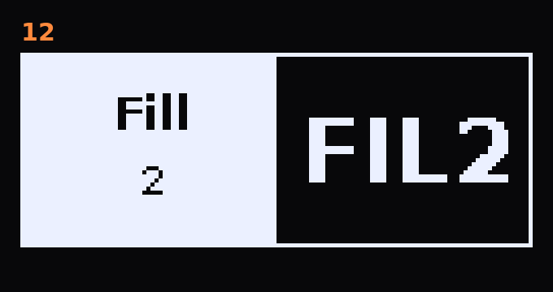

Elektron Model:Cycles OS 1.13 · also on Model:Samples
PPPCCC M:S Mods
Extra features for the official firmware anyone can download from Elektron: solo and better mutes,
tempo-synced delay notes, new effects, strummed chords, grooves with humanize, an audio load meter, absolute
CONTROL ALL, a selection mode for trigs and a second fill.
Every feature is a separate patch with its own documentation, generator and emulator test, and you
choose which ones you install.
Status: v2.1.0. Every patch was developed in an emulator and tested on my own
Model:Samples running the Cycles OS. A real Model:Cycles has not been tested yet. The code paths are the same,
but please report back if you try it. Coming from v1.0.0? Read
what changed.
Features
Each feature is one patch; the number is the patch number, the newest come first. “Details” opens
the full page with storage, hooks, memory and tests. Patches 05–11 build on a small core (patch 00), which
the build tool adds automatically; 01–04 and 12 need nothing else.

12
Alternative Fill
A second fill with its own trig conditions. Hold PAGE for the fill as usual, then also hold FUNC:
as long as both are held, Fill 2 replaces Fill 1. Let go of FUNC and you are back in Fill 1. With the fill
latched (TRACK + PAGE), holding FUNC switches to Fill 2 too.
Two new trig conditions belong to it. In the list they come right after FILL and !FILL: FILL, !FILL,
FIL2, !FIL2, PRE, …
Condition
no fill
Fill 1
Fill 2
FILL
–
plays
–
!FILL
plays
–
plays
FIL2
–
–
plays
!FIL2
plays
plays
–
Patterns from the stock OS load unchanged. On a firmware without this patch, FIL2 and !FIL2 trigs always
play.
Edit many trigs at once without holding them all down, because you only have so many fingers.
SETTINGS + PAGE turns the selection mode on or off (off clears the selection).
In the mode, tap a trig to select or deselect it. Selected trigs blink fast. Trigs are not set or
cleared.
FUNC + PAGE selects all trigs of the track, again = none. PAGE changes the page as usual.
The firmware treats the selected trigs as if you held them, so everything that works on held trigs works on
the selection:
Knobs p-lock all selected trigs. Note, velocity, length and nudge change all of them.
REC copies the selected trigs (“Copy N Trigs”), STOP pastes the copied trigs starting at the
first selected step, PLAY clears the p-locks of the selected trigs.
With control mode Absolute, all selected trigs take the value of the first selected trig; with
Relative every trig keeps its own offset.
Relative or absolute parameter change for CONTROL ALL
Hold TRACK + turn a knob changes that parameter on all six tracks (CONTROL ALL). The firmware does
this relatively: every track moves by the same amount from its own value, and stops at its limit. This
patch adds absolute mode: all tracks take the new value of the selected track.
Hold TRACK + tap SETTINGS switches between Relative and Absolute. A popup shows the mode.
It applies to TRACK + any knob, TRACK + LEVEL (volume), FUNC + TRACK + LEVEL (pan), the humanize of
patch 09 and the trig selection of patch 11.
Relative is the stock behaviour and the default. The setting is kept after power-off.
Grooves. A groove template shifts and accents the 16th steps. Hold FUNC + turn Swing to
choose it (4 detents per step, the popup shows the name).
Each track’s own Swing sets how strongly that track follows the groove: at the minimum it plays
straight, at the maximum it plays the full groove, both timing and accents. So the hi-hat can groove while
the kick stays straight.
Humanize adds small random variations per track, on top of any groove (also on Swing):
Hold SETTINGS + turn Swing = humanize timing of the selected track, 0–100. At 100, notes
move up to ±0.15 step, about ±19 ms at 120 BPM.
Hold MACHINE + turn Swing = humanize velocity of the selected track, 0–100. At 100, up to
about ±29 %.
Hold TRACK as well to change all six tracks at once (relative or absolute, see patch 10).
Groove and humanize are saved in the pattern, so every pattern can have its own feel. To make
MACHINE usable as a modifier, the MACHINE menu now opens on release instead of on press.
Shows how busy the audio engine is. When the load gets close to 100 %, the controls feel sluggish, because
the interface only gets the time the audio leaves over. Hold SETTINGS + turn REVERB SEND right to show a
small box “LOAD peak/average” in percent, updated every half second. Turn it left to hide it. The meter
is always off after power-on.
For reference, on a Model:Samples: idle 82/76, VIBDEL 83/78, CHODEL 85/80, CHODEL + RAZR 89/85. The stock
firmware alone already uses about three quarters.
Three new delays for the delay slot. Hold TRACK + turn Delay Time to switch Delay → Digital → VIBDEL
→ CHODEL (4 detents per step). Time, Feedback and Send work as usual, including the note values and exact
triplets of patch 04. The choice is saved in the pattern.
Digital: the opposite of the dark stock delay. Bright and clean, up to 5.4 s. Every repeat stays
bright (low-pass about 12.8 kHz instead of about 1.4 kHz) and gets a little thinner in the lows (high-pass
about 240 Hz), so long feedback tails stay clear.
VIBDEL: vibrato on the delay. The feedback is modulated too, so the repeats get more and more
wobbly.
CHODEL: a clean repeat plus a chorused one, left and right moving in opposite directions, for a
wide sound.
Hold SETTINGS + turn DELAY SEND = modulation speed of VIBDEL / CHODEL. A popup shows the value.
The repeats of VIBDEL and CHODEL are slightly darker and thinner than the original, like a tape or
bucket-brigade delay.
Digital DelayVibrato Delay (VIBDEL)Chorus Delay (CHODEL)
Four new effects for the reverb slot. Hold TRACK + turn Reverb Size to switch Reverb → Chorus I →
Chorus II → Phaser → RAZR. One step needs 4 detents, so you don’t skip past an effect by accident, and the
parameter names change at once. Every track’s reverb send feeds the chosen effect. The choice is saved
in the pattern, so each pattern can have its own effect.
Chorus I / Chorus II: a lush stereo chorus with two modes, in the style of classic 80s polysynth
choruses. Size = speed, Tone = depth.
Phaser: a 4-stage phaser in the style of classic phaser pedals. Size = speed (0.1–6 Hz),
Tone = color.
RAZR: a dark, gritty lo-fi reverb that feeds a phaser. Send = mix, Size = reverb
length, Tone = phaser speed (0.05–4.9 Hz; at 0 you hear only the lo-fi reverb).
The delay of the Model:Cycles is tempo-synced, but Delay Time only shows numbers. With this patch the
musical positions show note values:
Even
1/1, 1/2, 1/4, 1/8, /16, /32, /64
Dotted
2., 4., 8., 16., 32.
Triplets
1T, 2T, 4T, 8T, 16T
The stock OS cannot hit a triplet exactly, because it counts in 1/128 notes. At the five triplet positions
the patch adds the missing fraction, so 1/8T really is an eighth-note triplet. All other values sound exactly
as before.
For quick drop-outs while the sequencer runs: hold a pad T1–T6 for about 200 ms or longer, and its
track is muted until you let go. It is the normal track mute: sequencer notes drop out, sounds that are
ringing decay naturally.
A short tap still plays the sound (on release).
If the track was already muted, it stays muted.
With the sequencer stopped, the pads play normally, on press.
On the stock OS a muted track still plays when you hit its pad or send it a MIDI note. With this patch a
muted track stays silent for pads, the keyboard and incoming MIDI. Only note-on is dropped, so muting while a
note is held cannot leave a hanging note.
There is nothing to set: it works in every mute mode.
Solo one track for a moment, then go back to exactly the mutes you had before. Solo works in the
latching mute mode from drumkilla’s latching-mute patch, which the build always includes: hold
TRK and tap FUNC, and the FUNC key lights up.
In the latching mode, hold FUNC + press a track key: that track plays, all others are muted.
The same again: your previous mutes come back.
FUNC + another track key while soloed: the solo moves to that track. Your mutes from before the first
solo stay saved.
A track key without FUNC toggles that mute as usual and ends the solo.
What is saved where, and all controls with their parameters:
User guide ·
Version history: Changelog
Feature
Control
Result
12 Fill 2
hold PAGE, then also FUNC
Fill 2 instead of Fill 1 (also with TRACK + PAGE latched)
12 Fill 2
trig conditions FIL2 / !FIL2
play only in Fill 2 / play except in Fill 2
11 Trig select
SETTINGS + PAGE
selection mode on / off
11 Trig select
in the mode: tap trigs · FUNC + PAGE
select / deselect · all / none
11 Trig select
with a selection: knobs · REC · STOP · PLAY
p-lock · copy · paste · clear locks for all selected
10 Control mode
hold TRACK + tap SETTINGS
CONTROL ALL relative ↔ absolute
09 Groove
hold FUNC + turn Swing
choose the groove
09 Groove amount
turn Swing
how much this track follows the groove
09 Humanize timing
hold SETTINGS + turn Swing
selected track, 0–100
09 Humanize velocity
hold MACHINE + turn Swing
selected track, 0–100
09 Humanize, all tracks
hold TRACK + SETTINGS / MACHINE + turn Swing
all six tracks at once
08 Load meter
hold SETTINGS + turn REVERB SEND
right = on, left = off
07 Strum
hold SETTINGS + turn SHAPE
−80…80 ms between chord notes
06 Delay FX
hold TRACK + turn Delay Time
Delay → Digital → VIBDEL → CHODEL
06 Mod delay speed
hold SETTINGS + turn DELAY SEND
VIBDEL / CHODEL speed
05 Reverb FX
hold TRACK + turn Reverb Size
Reverb → Chorus I → Chorus II → Phaser → RAZR
04 Delay notes
turn Delay Time
note values, exact triplets
03 Hold to mute
sequencer running: hold T1–T6
track muted until release
02 Live mute
mute a track
pads and MIDI notes stay silent too
Latching mute (drumkilla)
hold TRK, tap FUNC
latching mute mode on (FUNC lights up)
01 Solo
latching mode: hold FUNC + track key
solo; again = previous mutes back
Why there is no .syx download
A firmware file contains Elektron’s operating system, which I am not allowed to redistribute. This repository
only holds my own code: the bytes each patch writes, plus a SHA-256 checksum of the original bytes it
replaces. No Elektron code is in here. Where a hook has to move a few original instructions into a patch’s
own code, the patch file holds only a placeholder and a checksum; the build tool copies those bytes from your
own firmware file. You build the firmware from your own copy of the official file. The build checks every
single write, and also the complete result against a published checksum.
Repository layout
patches/ one JSON per patch (offsets, new bytes, SHA-256 of the
original bytes) + manifest.json
tools/ build.py (.syx -> .syx), apply_patches.py (image -> image)
docs/ user guide, build guide, technical reference, changelog,
one page per patch
grooves/ the groove tables (grooves.json)
src/ the generators that produce the ColdFire code, regen.py
tests/ the emulator tests (run_all.py)
assets/ title images, demo pictures and sound demos (page)
You do not need src/ or tests/ to build the firmware. They are here for
transparency, and so others can check the work and build on it. See the
technical reference.
The ZIP holds the patches, the build tool and the docs, but no firmware. Unpack it and run the
commands below in that folder.
You need Python 3, the official model-cycles_OS1.13.syx from elektron.se, and a checkout of
drumkilla/elektron-model-tweaks. That checkout
supplies the firmware container code and the latching-mute patch that Solo builds on.
For a Model:Samples you first make the Cycles OS for the Samples with Modded-Cycles’ cross-flash tool,
then build from that file. Both are covered in the
build guide.
As with any firmware mod: use at your own risk. The start-up menu (hold FUNC at
power-on) can always bring back an official OS.
Credits
Latching mute is by drumkilla
(elektron-model-tweaks, MIT). The solo
extension (patch 01) is mine and needs it.
Firmware research, the emulator rigs, the sprite-mask method for free memory and the cross-flash for the
Model:Samples come from Modded-Cycles (MIT).